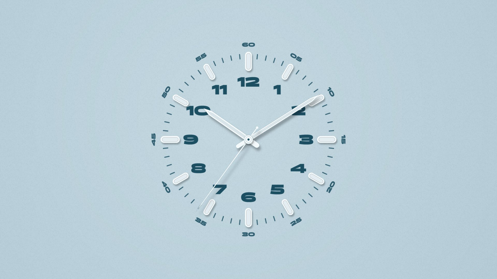
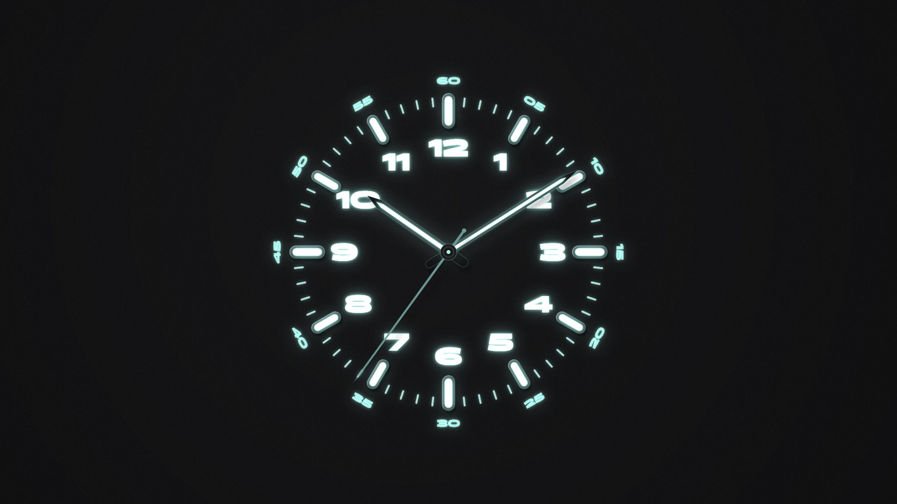
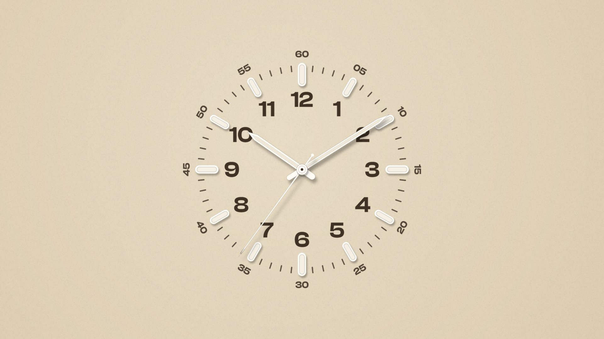

Dials
Sixteen hand-tuned colours, each with a matching night look. The dial fills the whole screen.
Try the dials
A screen that sits idle should be calm. Klock fills it with one tone, a fine paper grain and a clock that keeps exact time. Quartz, mechanical or smooth. Glowing lume after dark. No words, no telemetry, and nothing to configure unless you want to.
Run the installer, press OK, and Klock is already selected. It works on every monitor, pauses when the display is off, and drops its frame rate on battery.
Three steps. No account.
Run the installer. It places the screensaver where Windows looks for it.
Open Settings from the Screen Saver dialog. Choose a dial, a movement and a typeface.
Klock keeps exact time, drifts slowly to protect OLED screens, and pauses when the display is off.
Preview for Windows 10 (1809+) and 11
Every hand position is a pure function of the time, so there is nothing to drift. The dial fills the whole screen, and everything you change here is exactly what the screensaver does.
Your Klock
Sixteen hand-tuned colours, each with a matching night look. The dial fills the whole screen.
Try the dials
After dark the hands and indices glow in one of fourteen lume colours. Follow Windows, or set a schedule.
See it at night
Set the numerals in Panchang, Clash Display, Satoshi or Melodrama.
Try typefaces
Klock 0.1.0 preview for Windows 10 (1809+) and Windows 11. It isn’t code-signed yet, so SmartScreen may ask you to confirm.